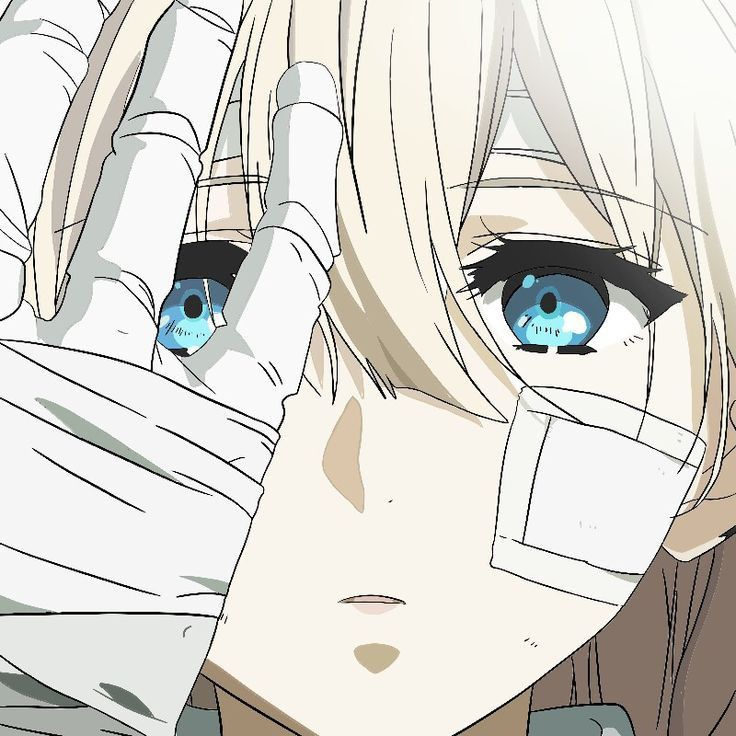

Meu Perfil Social

Valdir Gabriel Pinheiro de Lara
Meu nome é Valdir Gabriel Pinheiro de Lara, mas podem me chamar de valval, eu tenho 17 anos, estou estudando programação pelo canal Curso em Vídeo e planejo me tornar um bom desenvolvedor de jogos algum dia. Passo o dia inteiro em casa, não tenho muitos amigos na escola, e apenas vivo a minha vida de uma forma bastante pacata, e não tenho muitas redes sociais.
- Minha data de nascimento: 03/01/2008
- Minha cor favorita: Índigo
- Minha comida favorita: Massa (espaguete) com salsicha
Quer entrar em contato comigo?
Como disse anteriormente, não tenho muitas redes sociais, mas aqui vai as minhas mais comuns:
Redes Sociais:
Redes Comerciais:
 Facebook: https://www.facebook.com/valdircoml/
Facebook: https://www.facebook.com/valdircoml/ Discord (nametag): vmplayer
Discord (nametag): vmplayer YouTube: https://youtube.com/@vmplayer1
YouTube: https://youtube.com/@vmplayer1 GitHub: https://github.com/vmplayer
GitHub: https://github.com/vmplayer LinkedIn: https://www.linkedin.com/in/vmplayer/
LinkedIn: https://www.linkedin.com/in/vmplayer/